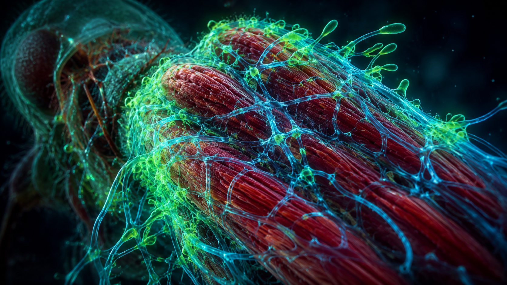

It sounds like the plot of a science fiction movie, but in tropical rainforests around the world, the zombie apocalypse is real—if you are a carpenter ant. A parasitic fungus known as Ophiocordyceps unilateralis has evolved one of the most complex and terrifying survival strategies in the natural world: it hijacks the nervous system of insects, completely overriding their free will.
The Hostile Takeover
The nightmare begins when a foraging ant walks over a microscopic fungal spore. The spore uses special enzymes to drill through the ant's exoskeleton and enter its bloodstream. For a few days, the ant continues its normal life, unaware that fungal cells are multiplying inside its body, feeding on non-vital organs to keep the host alive.
Then, the fungus makes its move. Recent 3D microscopic imaging from Penn State University revealed something shocking: the fungus doesn't actually attack the ant's brain. Instead, it creates a 3D network that surrounds and penetrates the ant's muscle fibers across its entire body, effectively cutting off the brain's connection to the muscles.
The Simple Example: The Remote-Controlled Car
Imagine you are driving a car, but suddenly a hacker takes over the vehicle's internal computer. You are still in the driver's seat, turning the steering wheel and pressing the brakes, but the car isn't responding to you anymore. The hacker is controlling the engine and tires from the outside. The ant is trapped in its own body as a passenger while the fungus takes the wheel.

The Death Grip
Under the chemical influence of the fungus, the ant is forced to abandon its colony. It is driven to climb up a plant stem to an exact height—usually about 25 centimeters off the ground—where the temperature and humidity are mathematically perfect for fungal growth.
Precisely at solar noon, the fungus forces the ant's jaw muscles to bite down on a major leaf vein with uncontrollable force. This is known as the "death grip." The fungus then destroys the jaw muscles so the ant can never let go. Days later, a long stalk erupts from the dead ant's head, releasing a shower of new spores onto the forest floor below to infect the next generation of ants.
A Crucial Balance
While horrifying, this parasite plays a vital ecological role. The fungus prevents any single species of ant from dominating the rainforest ecosystem. It is a brutal, beautiful reminder of the lengths to which life will go to survive.
Scientific References & Sources
- Penn State University Research: ‘Zombie ant’ brains left intact by fungal parasite.
- National Geographic: How the zombie fungus takes over ants' bodies.
- Proceedings of the National Academy of Sciences (PNAS): Three-dimensional visualization of fungal networks in ants.